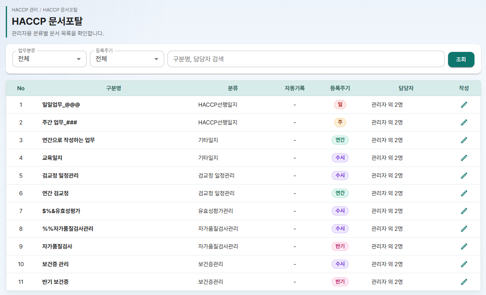
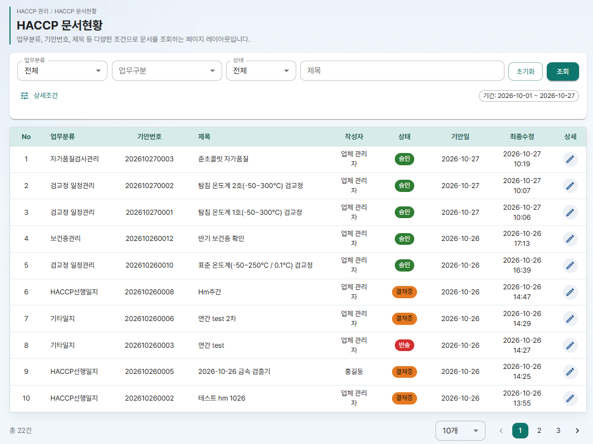
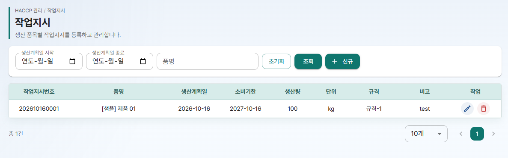
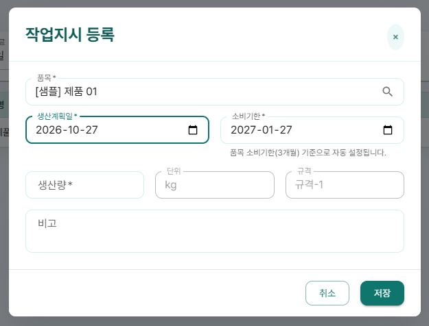
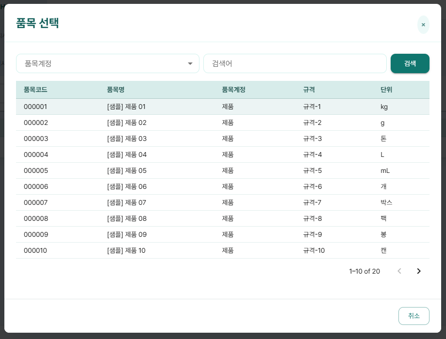

HACCP Cloud 사용 매뉴얼 ⑥편
HACCP 관리
- HACCP 문서포탈에서 업무별 목록을 보고 기안 작성으로 들어가는 방법
- HACCP 문서현황에서 작성, 결재된 문서를 조건으로 찾는 방법
- 작업지시를 등록, 수정, 삭제하는 방법
이 편은 메뉴의 HACCP 관리 아래 세 화면을 다룹니다. 관리자만 쓸 수 있는 기능에는 관리자 전용 표시를 붙였습니다.
1. HACCP 관리 한눈에 보기
| 메뉴 | 하는 일 |
|---|---|
| HACCP 문서포탈 관리자 전용 | 업무(양식)별 목록을 보고 기안 작성으로 들어갑니다. |
| HACCP 문서현황 | 작성하거나 결재한 문서를 조건으로 찾아 엽니다. |
| 작업지시 | 생산 품목별 작업지시를 등록, 수정, 삭제합니다. |
2. HACCP 문서포탈 관리자 전용
메뉴의 HACCP 관리 > HACCP 문서포탈을 엽니다. ④편 HACCP 양식관리에 등록한 업무가 한 줄씩 보입니다.
목록에는 No, 구분명, 분류, 자동기록, 등록주기, 담당자, 작성이 보입니다. 자동기록 칸은 지금은 항상 "-" 로 보입니다.

업무 찾기
업무분류(기본 "전체"), 등록주기(기본 "전체")를 고르고 "구분명, 담당자 검색" 칸에 입력한 뒤 조회를 누르거나 Enter 를 누릅니다.
목록에서 할 수 있는 일
- 구분명을 누르면 HACCP 문서현황이 그 업무로 걸러진 채 열립니다. 그 업무로 지금까지 작성된 문서를 볼 수 있습니다.
- 작성 칸의 연필 아이콘(작성하러 가기)을 누르면 기안 작성 화면이 열립니다. 이후 작성과 결재 방법은 ⑤편 3. 기안 작성 화면을 보세요.
3. HACCP 문서현황
메뉴의 HACCP 관리 > HACCP 문서현황을 엽니다. 이미 작성했거나 결재한 문서를 찾는 화면입니다.

기본 검색
- 업무분류, 업무구분을 고릅니다. 고르지 않으면 전체에서 찾습니다.
- 상태를 고릅니다. 전체, 임시저장, 결재중, 승인, 반려 중에서 고를 수 있습니다.
- 필요하면 제목을 입력합니다.
- 조회를 누릅니다. 초기화를 누르면 조건이 처음 값으로 돌아갑니다.
상세조건
상세조건을 누르면 조건 칸이 더 펼쳐지고 버튼이 상세조건 닫기로 바뀝니다.
- 기안일 시작, 기안일 종료: 찾을 기간입니다. 목록의 기안일 기준으로 찾습니다.
- 기안번호: 기안번호를 알면 바로 찾습니다.
- 참여유형: 기안자, 결재자, 참조자 중 여러 개를 고를 수 있습니다. 내가 기안했거나 결재했거나 참조한 문서만 골라 볼 때 씁니다.
- 작성자 관리자 전용: 관리자만 입력할 수 있습니다. 일반 사용자에게는 칸이 잠겨 보입니다.
목록 보기
목록에는 No, 업무분류, 기안번호, 제목, 작성자, 상태, 기안일, 최종수정, 상세가 보입니다. 목록 아래에서 "총 N건" 을 확인하고, 한 페이지에 보일 건수를 바꾸거나 페이지를 넘길 수 있습니다.
상세 칸의 연필 아이콘(상세 보기)을 누르면 문서가 열립니다. 아직 기안이 없는 줄은 아이콘이 흐리게 보이고 눌리지 않습니다.
4. 작업지시
메뉴의 HACCP 관리 > 작업지시를 엽니다. 생산 품목별 작업지시를 등록하고 관리하는 화면입니다.
목록에는 작업지시번호, 품명, 생산계획일, 소비기한, 생산량, 단위, 규격, 비고, 작업이 보입니다.

작업지시 찾기
생산계획일 시작, 생산계획일 종료, 품명을 입력하고 조회를 누르거나 품명 칸에서 Enter 를 누릅니다. 초기화를 누르면 조건이 비워집니다.
작업지시 등록
- 신규를 누릅니다. "작업지시 등록" 창이 열립니다.
- 품목 칸("클릭하여 품목을 선택하세요")을 누릅니다. "품목 선택" 창이 열립니다.
- 품목계정(전체, 제품, 반제품)을 고르고 검색어(품목코드, 품목명, 규격)를 입력한 뒤 검색을 누릅니다. 원하는 품목 줄을 누르면 선택되고 창이 닫힙니다.
- 단위와 규격은 고른 품목의 값으로 자동으로 채워지고 고칠 수 없습니다.
- 생산계획일을 고릅니다. 소비기한이 자동으로 계산되어 들어갑니다. 필요하면 직접 고칠 수 있습니다.
- 생산량을 입력하고, 필요하면 비고를 입력합니다.
- 저장을 누릅니다. 작업지시번호는 저장할 때 자동으로 붙습니다.


작업지시 수정, 삭제
- 수정: 작업 칸 연필 아이콘(작업지시 수정) → "작업지시 수정" 창에서 고침 → 저장. 작업지시번호는 보이기만 하고 바꿀 수 없습니다.
- 삭제: 작업 칸 휴지통 아이콘(작업지시 삭제) → "작업지시 삭제" 창에 "'(작업지시번호) (품명)' 작업지시를 삭제하시겠습니까?" 가 보이면 삭제.
5. 안내 메시지 풀이
| 화면에 나오는 메시지 | 뜻과 해결 방법 |
|---|---|
| HACCP 문서포탈 목록을 불러오지 못했습니다. | 일시적인 연결 문제입니다. 화면을 새로 고치세요. |
| 조회된 문서가 없습니다. | HACCP 문서포탈에서 검색 조건에 맞는 업무가 없습니다. 검색 칸을 비우거나 조건을 "전체" 로 바꿔 보세요. |
| HACCP 문서 목록을 불러오지 못했습니다. | 일시적인 연결 문제입니다. 화면을 새로 고치세요. |
| 조건에 맞는 문서가 없습니다. | HACCP 문서현황에서 조건에 맞는 문서가 없습니다. 기간과 상태를 확인하세요. |
| 작업지시 목록을 불러오지 못했습니다. | 일시적인 연결 문제입니다. 화면을 새로 고치세요. |
| 조회된 작업지시가 없습니다. | 검색 조건에 맞는 작업지시가 없습니다. 초기화를 누르고 다시 조회하세요. |
| 등록되었습니다. / 수정되었습니다. / 삭제되었습니다. | 작업지시 저장, 삭제가 끝났습니다. 목록이 다시 조회됩니다. |
| 작업지시를 처리하지 못했습니다. | 작업지시를 저장하거나 삭제하지 못했습니다. 입력 내용을 확인하고 다시 시도하세요. |
| 품목을 선택하세요. | 품목 칸을 눌러 품목을 고르세요. |
| 생산계획일을 입력하세요. / 소비기한을 입력하세요. | 꼭 입력해야 하는 칸이 비어 있습니다. |
| 소비기한은 생산계획일 이후여야 합니다. | 소비기한을 생산계획일과 같거나 뒤의 날짜로 고치세요. |
| 생산량은 0보다 커야 합니다. | 생산량에 0보다 큰 수를 입력하세요. |
| 비고는 255자 이하로 입력하세요. | 비고를 255자 이하로 줄이세요. |
| 검색된 품목이 없습니다. | 품목 선택 창에서 조건에 맞는 제품, 반제품이 없습니다. 검색어를 바꾸거나 ③편 품목 관리에서 품목을 먼저 등록하세요. |
실패 메시지 자리에는 서버가 알려 준 이유가 대신 보일 수 있습니다.
지난달 문서가 안 보여요
HACCP 문서현황의 기간이 처음에 이번 달로 잡혀 있습니다. 상세조건에서 기안일 시작을 바꾸고 조회를 누르세요.
작성자 칸이 눌리지 않아요
작성자 칸은 관리자만 쓸 수 있습니다. 일반 사용자는 참여유형으로 내가 참여한 문서를 골라 보세요.
품목 선택 창에 원재료가 안 나와요
작업지시는 제품, 반제품만 대상입니다. 원재료, 부재료는 나오지 않습니다.
소비기한이 생산계획일 1년 뒤로 들어가요
고른 품목의 소비기한 기준이 "없음" 입니다. ③편 품목 관리에서 품목의 소비기한 기준을 정하거나, 등록 창에서 소비기한을 직접 고치세요.